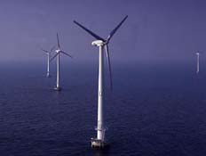

Vindeby
Offshore Wind Farm Vindeby
Offshore Wind Farm
Photograph © 1992 Bonus Energy A/S |
Megawatt
sized wind turbines, cheaper foundations and new knowledge about
offshore wind conditions is improving the economics of offshore
wind power.
While wind energy is already economic in
good onshore locations, wind energy is about to cross another
frontier: The economic frontier set by shorelines. Researchers
and developers are about to challenge conventional wisdom on
electricity generating technologies: Offshore wind energy is
rapidly becoming competitive with other power generating technologies.
The
Danish Plan 21
According to The Danish Governments' Action Plan for Energy,
Energy 21 (see the Links page),
4,000 MW of offshore wind power should be installed before year
2030. With another 1,500 MW installed onshore Denmark will then
be able to cover more than 50 per cent of total electricity consumption
by wind energy. In comparison, the current wind power capacity
in Denmark is 1,100 MW (mid 1998).
A total of 5,500 MW of wind power in the
Danish electricity system means that the wind turbines periodically
will cover more than 100 per cent of Danish electricity demand.
Therefore, the future Danish offshore power plants should be
an integrated part of the Scandinavian electricity system, which
is based on huge amounts on hydro power.
With a total investment of some 48 billion
DKK (= 7 billion USD) for the 4,000 MW offshore capacity the
Danish action plan will be the world's largest investment in
wind power ever.
Offshore
Timetable in Denmark
Danish power companies have already applied for planning permission
for 750 MW of offshore wind parks. According to their timetable
more than 4,000 megawatts of wind power will be installed offshore
in Denmark before 2027. The first stage is likely to be a smaller
40 MW offshore park just of the coast of Copenhagen in year 2000.
A report drafted by the Danish power companies
for the Minister of Environment and Energy identifies four main
areas in Danish sea territory suitable for wind power with a
potential of 8,000 MW. The philosophy behind the selected areas
is simple: For environmental reasons the Committee has concentrated
the capacity in few and remote areas with water depths between
5 and 11 metres.
The areas have been selected to avoid national
park areas, shipping routes, microwave links, military areas,
etc. The distance from coastal areas varies from 7 to 40 km.
This also minimises the visual impact onshore.
The most recent research into foundations
indicates that it may be economic to install offshore turbines
even at 15 metres water depth. This mean that the offshore potential
is some 16,000 MW in the selected areas in the Danish Waters. |